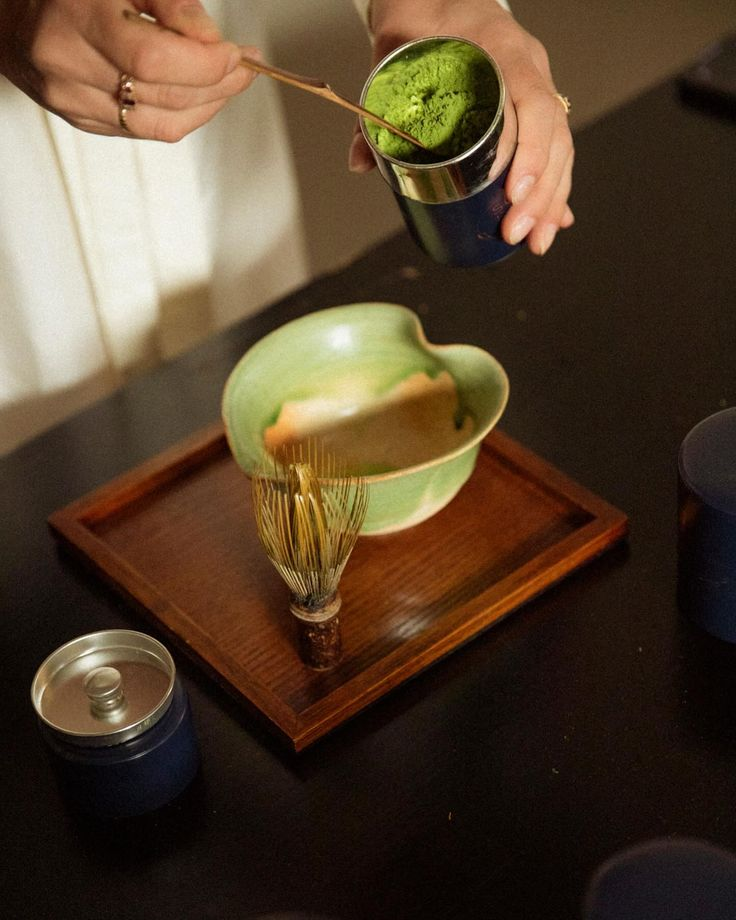

CONOCE SOMA
Más que matcha,
un ritual.
En SOMA creemos que los pequeños momentos pueden convertirse en algo especial. Queremos que cada taza de matcha sea una oportunidad para disfrutar, relajarte y conectar contigo mismo.
NUESTRA HISTORIA
El inicio de algo especial.
SOMA nace de la idea de crear un espacio donde el matcha sea más que una bebida. Un lugar para disfrutar de momentos tranquilos, compartir experiencias y hacer de lo cotidiano algo diferente.
Nuestra inspiración viene de la sencillez, los ingredientes de calidad y el gusto por los pequeños detalles.

LO QUE NOS INSPIRA
Nuestra filosofía
01
Calidad
Creemos en ofrecer matcha de calidad para disfrutar cada taza.
02
Bienestar
Nos gusta crear momentos de calma y equilibrio en la rutina diaria.
03
Ritual
Cada taza es una oportunidad para hacer una pausa y disfrutar.